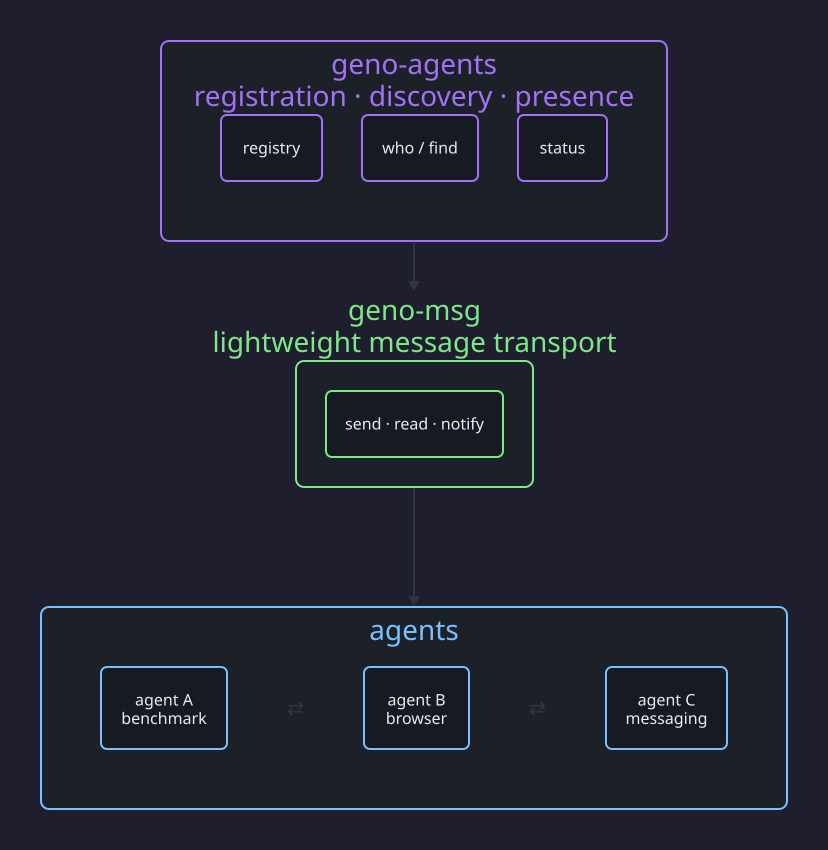

Agent coordination layer — registration, discovery, and presence for multi-agent systems
Every multi-agent framework focuses on what agents can do (skills, tools, prompts). None solve how agents find each other and coordinate work.
We observed this firsthand: autonomous Claude Code sessions messaging each other with no context about who they're talking to, what the other agent does, or whether it's even listening. Messages go unread. Help requests get no response. Agents cold-email strangers.

Three ways to install — pick the one that fits your setup.
# Via Vercel Skills CLI (works with Claude Code, Codex, Cursor, etc.)
npx skills add 42euge/geno-agents
# Clone and install
git clone https://github.com/42euge/geno-agents
pip install -e geno-agents
# Add to .mcp.json
{
"geno-agents": {
"command": "python",
"args": ["-m", "geno_agents.mcp_server"]
}
}
.geno-agents fileDrop a .geno-agents file at the root of any repo to declare its agent identity. On session start, the hook reads it and auto-registers.
# .geno-agents
role: benchmark-agent
description: Kaggle Learning Benchmark
capabilities:
- kaggle
- benchmarks
- notebooks
No file? The hook falls back to inferring the role from CLAUDE.md and detecting MCP servers as capabilities.
Who am I? Show this agent's card.
Who else is here? List other agents.
Who handles X? Search by role or capability.
| register <role> | Register with a role, description, capabilities, and project |
| update | Update agent card: --working-on, --using, --status |
| ls | List all agents with roles, tasks, and resource usage |
| heartbeat | Update presence (auto via PostToolUse hook) |
| unregister | Remove from the registry |
| prune | Remove stale agents (10+ min inactive) |
Role, capabilities, project, current task, resources in use — all in one card per agent.
SessionStart hook reads .geno-agents file or infers from CLAUDE.md. Zero config.
4 tools: list_agents, who, whois, update_agent, register_agent. Native integration.
/geno-agents slash command. Works across Claude Code, Codex, Cursor, and 40+ agents.
Post tasks with required capabilities. Agents claim tasks matching their skills.
Project-level state — goals, progress, decisions. The missing "blackboard."
Solve "what can an agent do?"
SKILL.md, MCP servers, tool definitions.
Solves "who's here and what are they doing?"
Registration, discovery, coordination.
No existing framework — CrewAI, AutoGen, LangGraph, A2A, OpenAI Swarm — solves all three of: dynamic discovery, task lifecycle with negotiation, and distributed shared context. Most assume you hardcode your agents at design time.